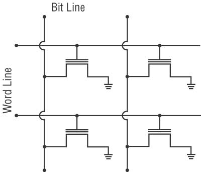
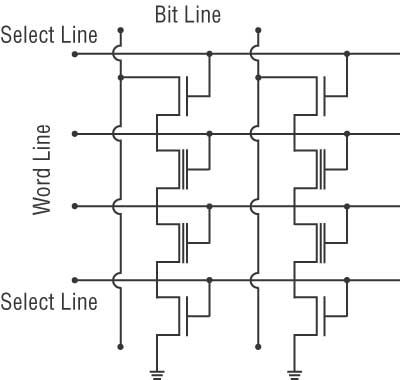

Логическое устройство
Существует несколько типов архитектур флэш-памяти и SSD, но наибольшее распространение получили архитектуры:
 Для получения доступа к содержимому ячейки, необходимо подать напряжение на управляющий затвор. Поэтому все управляющие затворы должны быть подсоединены к линии управления, называемой линией слов (Word Line).
Анализ содержимого ячейки памяти производится по уровню сигнала на стоке транзистора. Поэтому стоки транзисторов подключаются к линии, называемой линией битов (Bit Line). Своим названием архитектура NOR обязана логической операции ИЛИ-НЕ (английская аббревиатура — NOR). Логическая операция NOR над несколькими операндами дает единичное значение, когда все операнды равны нулю, и нулевое значение во всех остальных случаях. Если под операндами понимать значения ячеек памяти, то в рассмотренной архитектуре единичное значение на битовой линии будет наблюдаться только в том случае, когда значение всех ячеек, подключенных к данной битовой линии, равно нулю (все транзисторы закрыты).
Архитектура NOR обеспечивает произвольный быстрый доступ к памяти, однако процессы записи и стирания информации происходит достаточно медленно. Кроме того, в силу технологических особенностей производства микросхем флэш-памяти и SSD с архитектурой NOR , размер самой ячейки получается весьма большим и потому такая память плохо масштабируется. Память NOR сегодня используется лишь в микросхемах BIOS и других ПЗУ малой емкости, например в сотовых телефонах.
 Другой распространенной архитектурой флэш-памяти является архитектура NAND , соответствующая логической операции И-НЕ. Операция NAND дает нулевое значение только в том случае, когда все операнды равны нулю, и единичное значение во всех остальных случаях.
Как мы уже отмечали, нулевое значение соответствует открытому состоянию транзистора, поэтому архитектура NAND подразумевает, что битовая линия имеет нулевое значение в случае, когда все подсоединенные к ней транзисторы открыты, и единичное значение — когда хотя бы один из транзисторов закрыт. Такую архитектуру можно организовать, если подключать транзисторы с битовой линии не по одному (как в архитектуре NOR), а последовательными сериями.
В сравнении с архитектурой NOR данная архитектура в силу особенностей технологического процесса производства позволяет добиться более компактного расположения транзисторов, а следовательно, хорошо масштабируется. В отличие от NOR-архитектуры в архитектуре NAND запись происхожит быстрее. Чтобы уменьшить негативный эффект низкой скорости чтения, микросхемы NAND снабжаются внутренним кэшем.
Все современные съемные носители построены на памяти NAND. Крупнейшими производителями NAND-чипов являются компании Intel, Micron Technology, Sony и Samsung. Ассортимент выпускаемых чипов довольно велик, а обновление его происходит несколько раз в год. Кроме рассмотренных нами архитектур NOR и NAND, во флэш-памяти и SSD используются и другие архитектуры, например AND, DiNOR и т.д., но они не получили массового распространения.
Подробнеее с логическим устройством памяти можно ознакомится на сайте
Также вы можете узнать больше об устройстве SSD дисков, посмотрев видео